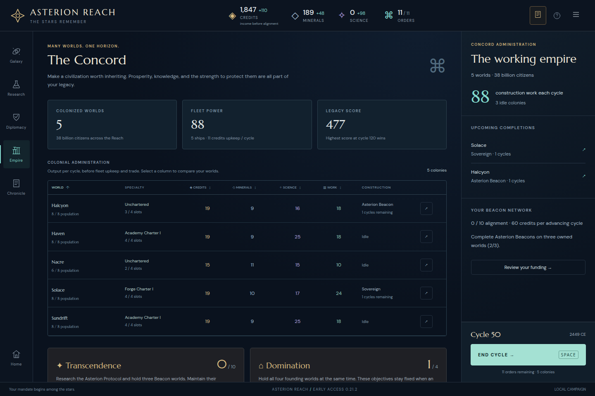
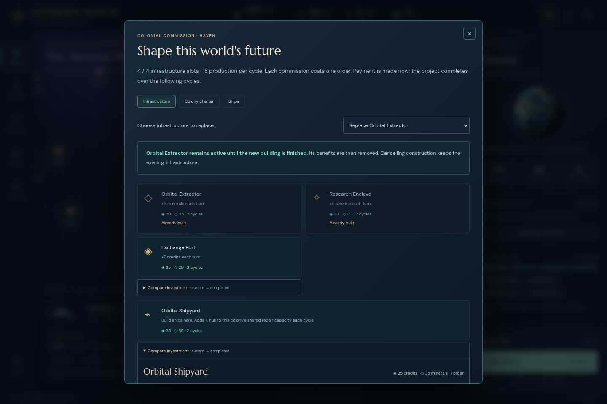
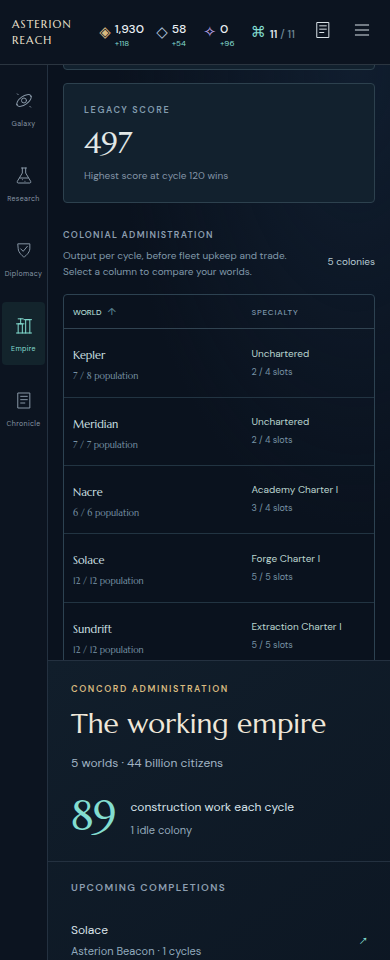
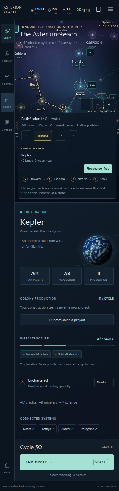
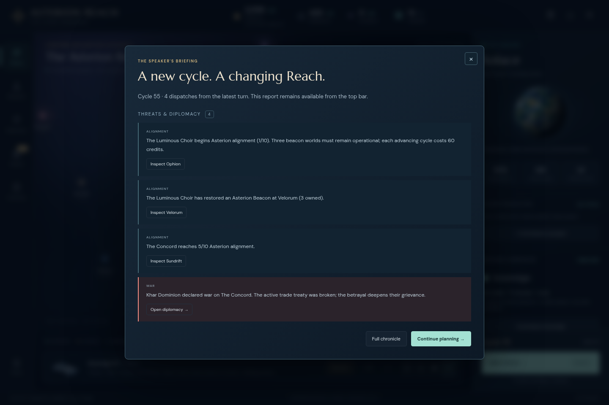
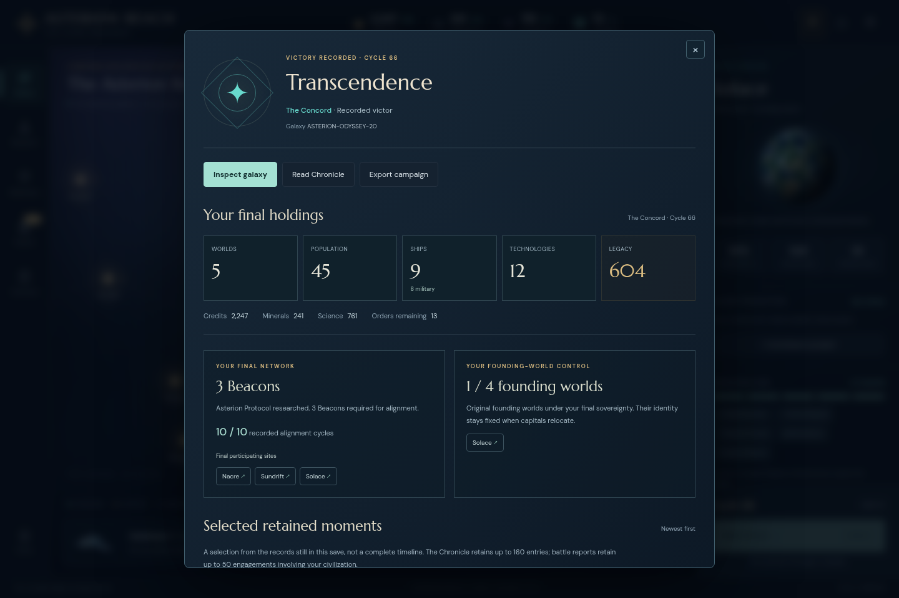

Experience critique · v0.21.2
Plain report · Task evidence · Late branch · Selected fix validation
Asterion Reach — independent experience critique
Baseline: 93a62961e994994d30c05240b17c39a418020473, v0.21.2
Reviewed 2026-10-29. Production browser target http://127.0.0.1:5220.
Judgment
The strongest next experience change is task-specific keyboard focus continuity after real commands. The game already reduces routine work responsibly: held garrisons stay quiet, spare orders need not be spent, and important wars interrupt a quiet late-game run. Broad automation or additional compulsory reminders are not supported by this pass. A second, smaller product improvement would let the player commission a colony project from the Empire table while retaining the comparison context. Narrow-screen colony actions deserve a bounded follow-up.
Method and limits
Read both good-4x.html and bad-4x.html in /tmp/asterion-research-and-russian/public/design before evaluation, especially decision evidence, preserving intent, late pacing and task observation. No outside research claims were added; these guides were used as diagnostic hypotheses, not proof of preferences.
Actual saves loaded in isolated Chromium contexts through localStorage, then the real UI was exercised with Playwright. Chromium executable /home/leg/.cache/ms-playwright/chromium-1223/chrome-linux64/chrome with --enable-unsafe-swiftshader. Inspection viewports: 1440×960 and 390×960, reduced motion. Read-only window.__asterion.getState() verified outcomes; no mutation API or engine commands were used. Script source is retained here. Game source was inspected, never edited.
Inputs:
• docs/default-campaign/actual/083-asterion-reach-cycle-50.json
• docs/default-campaign/actual/109-asterion-reach-cycle-60.json
• docs/odyssey-playtest/actual/checkpoints/cycle50.json
• docs/odyssey-playtest/actual/checkpoints/cycle66.json
Tasks: inspect all five workspaces in these late and finished states; compare and commission a replacement shipyard at Haven; activate a star and research by keyboard; inspect the idle Kepler row at 390px; inspect ODYSSEY's conclusion, Chronicle and a retained battle; continue a branch of actual default50 to55 while explicitly assigning research and holding one new cruiser. That branch is new play from an actual save, not the original campaign history. This was a focused critic session, not a novice usability study, ten-colony campaign or measurement of player enjoyment. Focus was positioned on a target before Enter in some tests: evidence establishes execution/focus behavior, not a complete keyboard-only discovery path. Pending Russian localization was outside this pass.
Observed problems
F1 — Keyboard execution loses its place after the player acts.
Severity: high for sustained keyboard play; medium overall. Confidence: high in behavior, medium in population impact.
Reproduction A: actual default50, focus Sundrift's visible galaxy-system-label button, Enter. Inspector correctly becomes Sundrift, but activeElement becomes BODY. Next Tab lands on Solace's label, not the selected Sundrift or its task context.
Reproduction B: Empire, sort Science descending, focus Haven's Inspect button, Enter. View changes to Galaxy and Haven is shown, but activeElement becomes BODY.
Reproduction C: Commission at Haven, replace Orbital Extractor, choose Orbital Shipyard. Actual queue becomes shipyard at cycle50, 10 orders left, 25 credits/35 minerals paid. Focus becomes BODY after modal closes. Next Tab lands on #import-save, an invisible sr-only file input at the end of the document.
Reproduction D: Research, focus Worldshaping's Research button, Enter. Correct project is assigned with carried 439 progress. Focus becomes BODY; next Tab starts at the All filter.
Consequence: an otherwise meaningful choice makes keyboard players repeatedly relocate themselves; one normal commit sends the next key to an invisible file-upload control. This adds navigation and uncertainty rather than strategy. It is not a claim that buttons are unreachable.
Source: src/main.js:96–105 replace selected UI and render after commands; src/main.js:230-ish closeModal only restores lastFocus when its old DOM node remains connected; src/main.js:386–393 do not restore after Inspect/build/research; src/galaxy.js:330 replaces labels. The hold and defense handlers already explicitly restore useful focus (main.js:381–382), while filter handlers do so too (356–357). Existing tests/keyboard-flow-ui.spec.js cover category/filter changes and Escape, not command commitment.
Evidence: task-results.json keys mapKeyboard, colony, researchKeyboard; screens/map-selection-focus.png; screens/colony-return-top.png. Focus evidence is DOM output, not visible screenshot inference.
F2 — Empire comparison and colony execution are separated by a forced map detour.
Severity: medium for repeated administration; likely lower for a five-world player who values inspecting geography. Confidence: high in behavior, medium in fatigue implication.
Actual default50 has five colonies and three idle worlds. Empire presents comparable science/work/slots/construction together. The only action in a colony row is Inspect. To execute a decided project at Haven, the player must leave Empire for Galaxy, open Commission in the system inspector, commission, then select Empire again to review the next world. In a second task, an Empire network position at scrollTop1098 returned at scrollTop0 after Inspect→Empire; Science-descending sort was correctly retained. There is no return-to-origin control. Upcoming completions in the right context are links; its '3 idle colonies' is a count without equivalent links.
The individual project choice is well supported once opened (see S1); the repeated administrative handoff is the problem. The test does not show that every idle world should construct something or that preserving the full map is always unwanted.
Source: src/empire-ui.js:20–24 create a table with only Inspect; src/main.js:96 forces Galaxy, :98 resets workspace scroll on page changes, :386 focuses the map. src/workspace-ui.js Empire branch provides upcoming-completion links and a non-actionable idle count.
Evidence: screens/default50-empire.png; task-results.json colony.returnNavigation; screens/colony-return-top.png; text/haven-shipyard-comparison.txt.
F3 — At 390px, names, idle status and the row's only action cannot be seen together.
Severity: medium on narrow screens; low for the desktop-first audience. Confidence: high in geometry, medium in actual user difficulty.
ODYSSEY50 Empire says '1 idle colony', but does not identify it in the right context. Scroll the table to the Kepler row: table is 760px wide inside a 310px viewport. Kepler's name is visible at x64; its Inspect button starts at x760. Construction/Idle is likewise offscreen. The world name is plain text, and no first column is sticky. Reaching the right-hand action requires horizontal movement; at that point the identifying name can disappear. Keyboard focus scrolls the control into view, but then inherits F1. Supporting specialty/construction text is 10px and population/slots text 9px, increasing the effort of reading an already divided comparison.
Horizontal scrolling itself is a sensible way to preserve numeric comparison. The specific problem is that the primary world action and construction status are at the far edge with no nearby duplicate or persistent identity. This is not a demand to turn the whole table into cards.
Source: src/empire-ui.js row markup; src/style.css:34 sets min-width760px and horizontal scroll without sticky cells.
Evidence: task-results.json mobile; screens/mobile-colony-table-left.png; screens/mobile-after-inspect.png.
Additional low-priority observation, not a recommended feature
On reloading ODYSSEY50, the held Pathfinder is selected at Stillwater while the inspector opens Solace. Their combination produces a nine-jump COURSE PREVIEW to Solace even though the save contains no such planned course. Inspecting Kepler similarly produces a six-jump preview. The preview is honestly labelled and spending still needs an explicit Plot click. Whether this confuses returning players remains untested. Do not mistake it for an overwritten route or state mutation. Evidence: screens/odyssey50-galaxy.png and screens/mobile-after-inspect.png. Source: main.js selectedSystemId/selectedFleetId initialization and getNavigationView.
Observed strengths worth preserving
S1 — Investment evidence is unusually complete and honest.
The real Haven replacement comparison showed colony minerals9→4, empire minerals48→43, repair pool4→8, unchanged science25 and production18, 2-cycle construction, one order, immediate costs, and ship availability after completion. It states that old infrastructure remains until completion, no old-investment refund, current population/technology, income timing and later uncertainty. These directly address the guide's missing-information diagnostic. The depth is optional under Compare investment. Evidence: text/haven-shipyard-comparison.txt; screens/haven-shipyard-comparison.png. The screenshot initially shows the comparison opening; the full effects are in the retained text below that fold.
S2 — Intentional inaction already works.
In the actual-default50→55 branch, the first turn completed Distributed Command, Halcyon's third beacon and a cruiser. I assigned Worldshaping once, then explicitly held that new cruiser at Solace. All five End cycle activations advanced without an unused-order confirmation. The player did not have to fill idle queues or wake every held garrison. Cycles51–53 did not auto-open routine reports. War at54 opened the briefing; war plus rival alignment at55 opened it again. The design allows a settled plan to run while drawing attention to consequential exceptions. Evidence: late-loop.json, late-loop-final.json and screens/default50-55-briefing.png. This is a positive counterexample to applying 'more reminders/automation' indiscriminately.
S3 — The late objective is visible and has a credible ending.
At default50, Empire explains the missing third beacon and the 60-credit funding condition with current-income assumptions. The played branch visibly advances alignment1→5. Completed default60 and ODYSSEY66 saves lock cycle advancement and retain inspectable final state. ODYSSEY's reopened conclusion reports final holdings, three participating sites,10/10 alignment and selected retained moments, with honest history limits. I followed Chronicle to a retained battle and returned without changing the saved state. Evidence: task-results.json ending.unchanged=true; screens/odyssey66-conclusion.png; text/odyssey66-conclusion.txt; screens/odyssey66-battle.png. This does not prove that the preceding ten-cycle race feels tense to a player.
S4 — Contextual workspaces, sorting and scope labels already reduce memory burden.
Empire compares world outputs and preserves chosen sort; Research shows current commissioned progress plus research-producing worlds; Diplomacy changes its dossier with the selected rival; Chronicle retains linked battle and expedition records. The credit label explicitly says income before alignment. These are useful supports for strategic judgment and are visually consistent. Evidence: retained per-view screenshots and text. This pass saw no browser page errors in the overview sweep (browser-errors.json).
Prioritized feasible improvements (choose one bounded iteration)
P1 — Preserve task-specific focus after execution; remove the hidden importer from ordinary Tab traversal.
Expected change: star activation keeps focus on its replacement label; explicit Inspect transfers focus to the resulting system heading or meaningful command; commissioning returns focus to the updated production summary or queue; research goes to its current-project summary. Use stable IDs/command-aware fallback targets, not stale DOM nodes. Leave #import-save callable from the menu while giving it tabindex=-1 or an equivalent non-Tab presentation.
Scope: focus restoration and one hidden input, no gameplay rules or automation.
Verification: repeat F1 A–D with actual50 at1440 and390; assert activeElement is visible/connected, new queue/project is correct, next Tab reaches a relevant command, and modal Escape/filter cases continue to work. Preserve screen scroll when restoring a label.
Counterexample: moving focus to the inspector after every map selection would interrupt someone comparing nearby stars. Preserve focus on the map for ordinary selection; transfer to the inspector when Inspect explicitly asks to open details. A command whose original button disappears needs a new result target, not an attempt to focus a disabled or stale opener.
Falsifier: no reduction in keyboard relocation steps, or new camera/scroll jumps and lost manual focus. Keyboard users should be able to complete a normal command without falling through to importer/body.
Priority: first, highest evidence and small technical scope.
P2 — Let a chosen colony commission from the Empire row while preserving the comparison.
Expected change: add a deliberately named row action such as Commission for idle colonies, opening the existing construction modal for that system without leaving Empire. After commit/cancel, keep row identity, sort and scroll. Keep Inspect as an explicit alternative for geography/defense details. An idle-world link list in context is an alternative small implementation; do not add both for this iteration without a task reason.
Scope: reuse existing construction rules/modal; no automatic spending, mandatory queue, default build or governor.
Verification: from default50 compare Haven and Nacre, commission one selected project, then compare the other without a Galaxy round trip. Verify actual costs/one order, row queue update, cancellation, finished-save disabling, sort/scroll/focus retention. Include a full-slot replacement and a free-slot colony. Expected two view-transition actions removed per commission from Empire.
Counterexample: a player deciding where to build defenses needs geography; Inspect must remain available. An intentionally idle colony near victory should remain valid with no warning badge, forced prompt or auto-build. If players overwhelmingly open the map anyway, the direct action may add clutter without useful savings.
Priority: second, behavior evidence strong but actual fatigue benefit unmeasured.
P3 — Keep world identity and its basic action accessible at narrow width.
Expected change: make the World name an Inspect action in the first column (with a descriptive accessible label), and consider a sticky name column while retaining horizontal numeric comparison. Avoid a whole new responsive screen until tested. A compact idle/build-status line near the name may be useful only if the task still requires far-edge searching.
Verification: identify the only idle Kepler at ODYSSEY50 and inspect it at390 without losing world identity; repeat an active project and desktop sort. Test touch/keyboard at the actual viewport, not only no-page-overflow assertions.
Counterexample: a sticky first column can consume too much of a310px table and hide numbers. If it leaves fewer than one useful numeric column, prefer a linked name plus an obvious horizontal affordance. Do not make the entire row a button that breaks sorting and text selection.
Priority: third, conditional on supporting phone play.
Untested questions
• What do actual keyboard and screen-reader users want focused after Inspect versus ordinary star selection? No assistive-technology session was run.
• Does preserving Empire context materially reduce fatigue across ten or more colonies? Actual inspected empires had five worlds, and existing 13-order cap may limit scale differently.
• Do players value intentionally idle colonies during a beacon countdown, and when would they choose standing instructions? This pass supports preserving that option, not estimating its prevalence.
• Do these two winning campaigns feel resolved before victory, or do their late invasions sustain tension? A five-turn branch and final-save inspection cannot answer subjective decisiveness.
• How does the same task feel after a day away? Resumed-save UI orientation was observed, but memory/relearning was not measured.
• No independent full opening, adversarial automation budget case, phone touch session, color-vision testing or long-form engagement study was done.
Guide rubric (0/1/2 are bounded observations, never summed)
Decision evidence:2, high — tested replacement task.
Contextual navigation:1, high — good workspace context, forced administrative detour.
Ownership/routine control:2 for tested holds/end-cycle behavior, high — not all route exceptions tested.
Keyboard continuity:1, high — filters work, commands lose focus.
Narrow readability/action access:1, high geometry / medium user implication.
Late pacing/engagement:untested as experience; ending support2, high for inspected saves.
Artifacts
inspect.mjs overview sweep; tasks.mjs concrete task reproduction; late-loop.mjs bounded continuation.
task-results.json DOM/geometry/state evidence; late-loop.json events; late-loop-final.json branch output.
screens/ screenshots; text/ visible per-view text and comparison/conclusion/battle extracts.
Follow-up implementation, explicitly requested after this critique
Commit14177d4bf4c6d5afaaf97f42c2d41cfe6b877143 on fix/keyboard-commit-focus, separate worktree /tmp/asterion-keyboard-commit-focus. Implements P1 only, including charter commissioning with the same result path. No gameplay rules, automation, workspace-scroll rewrite or new English strings. Map labels keep focus only for keyboard-visible focus; explicit Inspect and successful keyboard commands focus the newly rendered heading/summary. The hidden importer stays callable from the menu and leaves ordinary Tab traversal. Twelve new browser cases and five existing keyboard/workspace cases passed; production build passed. Exact state equivalence is tested for read-only selection/Inspect and for the normal paid command effects. Modal Tab wrap, Escape and pointer-after-keyboard behavior are covered. Fixed-result screenshots and verification metadata are in fix/. P2/P3 remain recommendations, not implemented scope.
Selected browser evidence

default50-empire.png
haven-shipyard-comparison.png
mobile-colony-table-left.png
mobile-after-inspect.png
default50-55-briefing.png
odyssey66-conclusion.png